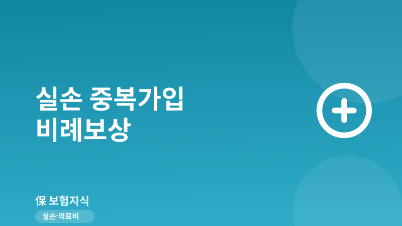
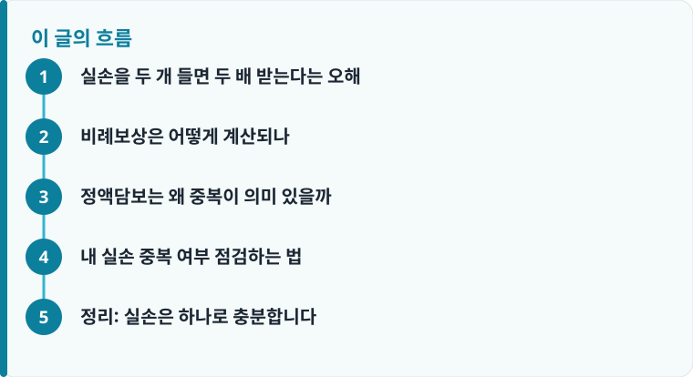

실손보험은 실제 낸 치료비 한도 안에서만 지급되므로, 두 개를 가입해도 각 보험사가 손해액을 나눠 낼 뿐 총액은 늘지 않습니다.
진단비·수술비 같은 정액담보는 중복가입해도 각각 받지만, 실손·자동차보험 대인 같은 실손담보는 비례보상이 원칙입니다.
같은 사람이 실손을 두 건 유지하면 보험료만 이중으로 나가고 환급은 안 되는 경우가 많아, 정리가 필요합니다.
실손을 두 개 들면 두 배 받는다는 오해
실손의료보험을 두 건 가지고 있으면 병원비를 두 번 청구해 두 배로 받을 수 있다고 생각하는 분이 많습니다. 하지만 실손은 이름 그대로 ‘실제 손해’를 보상하는 보험입니다. 내가 실제로 부담한 치료비가 100만 원이라면, 보험에서 돌려받을 수 있는 총액도 그 100만 원(자기부담금을 뺀 금액)을 넘지 못합니다. 두 개를 가입해도 결과적으로 손에 쥐는 돈은 한 개일 때와 거의 같습니다. 실손이 처음이라면 실손보험 기본 구조를 먼저 보면 이 원리가 훨씬 쉽게 이해됩니다.
이런 구조를 두는 이유는 보험을 통해 손해 이상으로 이득을 보는 상황, 이른바 ‘이득금지 원칙’을 막기 위해서입니다. 만약 실손을 여러 개 들어 실제 낸 돈보다 더 많이 받을 수 있다면, 일부러 과잉진료를 유도할 유인이 생기고 결국 전체 가입자의 보험료가 오릅니다. 그래서 표준약관은 실손을 여러 건 가입해도 각 보험사가 손해액을 나눠 부담하도록 정해 두었습니다. 즉 두 건을 유지하면 보험금이 늘어나는 게 아니라 보험료만 두 배로 나갑니다.
실제로 과거에는 실손이 자기부담금 없이 병원비 전액을 돌려주던 시기가 있었지만, 지금은 세대와 무관하게 일정 비율을 본인이 부담하도록 바뀌었습니다. 이런 자기부담금이 있는 이유도 같은 맥락입니다. 보험금으로 손해를 전부 메워 주면 의료 이용이 과도해지기 때문에, 실손은 ‘실제 손해의 일부는 본인이 부담한다’는 원칙 위에 설계되어 있습니다. 이 원칙을 이해하면 왜 중복가입이 보상 총액을 늘리지 못하는지가 자연스럽게 정리됩니다.
비례보상은 어떻게 계산되나
실손을 두 건 이상 가입한 경우 적용되는 방식이 ‘비례보상’입니다. 각 계약이 단독으로 보상했을 금액의 비율대로 보험금을 나눠 지급하는 방식입니다. 예를 들어 실제 부담한 치료비가 90만 원이고, A보험과 B보험이 단독이라면 각각 90만 원을 보상할 상황이라면, 두 보험사는 90만 원을 절반씩(각 45만 원) 나눠서 냅니다. 합쳐도 90만 원, 결국 한 개만 있었을 때와 총액이 같습니다.
여기에 자기부담금도 함께 계산됩니다. 4세대 실손 기준으로 급여 항목은 20%, 비급여 항목은 30%를 본인이 부담하는데, 이 자기부담금 역시 비례보상 계산의 출발점이 되는 ‘보상 대상 손해액’을 정한 뒤에 적용됩니다. 두 건을 들었다고 자기부담금이 사라지거나 줄어드는 것도 아닙니다. 세대별 자기부담 비율과 갱신 조건이 헷갈린다면 실손보험 비교 기준에서 세대 차이를 확인해 두는 것이 좋습니다. 결국 중복가입의 이득은 ‘한 보험사가 지급을 거절해도 다른 곳에서 받을 수 있다’는 심리적 안심 정도에 그치는 경우가 많습니다.
청구 절차도 두 배로 번거로워진다는 점을 놓치기 쉽습니다. 실손을 두 건 가지고 있으면 진료비 영수증과 세부내역서를 각각 준비해 두 보험사에 나눠 청구해야 하고, 한쪽에서 지급한 내역을 다른 쪽에 증빙으로 제출해야 하는 경우도 생깁니다. 받는 총액은 한 건일 때와 같은데 서류 부담과 처리 기간만 늘어나는 셈입니다. 소액 통원처럼 자주 청구하는 상황일수록 이 불편은 더 크게 다가옵니다.

정액담보는 왜 중복이 의미 있을까
모든 보험이 비례보상인 것은 아닙니다. 손해액과 무관하게 정해진 금액을 지급하는 ‘정액담보’는 중복가입한 만큼 각각 다 받을 수 있습니다. 대표적으로 암 진단비, 수술비, 입원 일당, 사망보험금 같은 담보입니다. 암 진단비 3,000만 원 특약을 두 개 가입했다면, 실제 치료비가 얼마든 진단 확정 시 3,000만 원씩 총 6,000만 원을 받습니다. 이 점이 실손과 결정적으로 다릅니다.
그래서 보험을 설계할 때는 ‘실손형이냐 정액형이냐’를 구분하는 것이 핵심입니다. 실손·실손형 특약(입원의료비, 통원의료비 등)과 자동차보험 대인·대물 같은 실손담보는 중복해도 비례보상이라 하나면 충분합니다. 반대로 진단비·수술비 같은 정액담보는 필요에 따라 여러 건을 설계할 수 있습니다. 내 보험 구성을 점검할 때 이 구분을 놓치면, 실손을 두 건 유지하면서 정작 진단비는 부족한 엇갈린 설계가 나오기 쉽습니다. 전체 보장의 균형을 다시 보고 싶다면 보험 리모델링 관점에서 점검하는 방법이 도움이 됩니다.
작성·검수 기준
이 글은 특정 보험사 상품을 권유하기 위한 것이 아니라, 실손의료보험의 비례보상 원리와 정액담보의 차이를 일반적인 약관 기준으로 설명하기 위해 작성했습니다. 자기부담금 비율, 비례보상 계산 방식, 담보 분류는 가입 시점의 약관과 실손 세대(1~4세대)에 따라 달라질 수 있습니다.
본인의 중복가입 여부와 정확한 보상 방식은 개별 약관과 상품설명서, 그리고 가입 전 체크리스트를 함께 확인하는 것이 가장 정확합니다.
내 실손 중복 여부 점검하는 법
과거에 직장 단체실손과 개인실손을 함께 들었거나, 갈아타는 과정에서 옛 실손을 해지하지 않아 두 건이 유지되는 경우가 의외로 많습니다. 특히 부모가 자녀 앞으로 실손을 하나 들어 둔 상태에서 자녀가 사회생활을 시작하며 회사 단체실손에 자동 가입되는 식으로, 본인도 모르는 사이 중복이 생기기도 합니다. 다음 순서로 점검하면 불필요한 이중 보험료를 줄일 수 있습니다.
- ‘내보험찾아줌’ 같은 조회 서비스나 보험사 앱에서 본인 명의 실손 계약이 몇 건인지 확인합니다.
- 각 계약의 담보명에서 ‘실손·입원의료비·통원의료비’ 등 실손형 담보가 중복되는지 봅니다.
- 직장 단체실손이 있다면 개인실손을 ‘중지’했다가 퇴직 후 재개할 수 있는 제도가 있는지 확인합니다.
- 실손이 두 건이면 세대·자기부담금·갱신 보험료를 비교해 유지할 한 건을 정합니다.
- 정액담보(진단비·수술비 등)는 별개이므로 실손만 정리하고 정액 보장은 유지·보완합니다.
정리: 실손은 하나로 충분합니다
실손의료보험은 비례보상 구조라 두 건을 유지해도 받는 병원비 총액은 늘지 않고, 보험료만 이중으로 나갑니다. 반대로 진단비·수술비 같은 정액담보는 중복가입한 만큼 각각 받을 수 있으니, 두 담보의 성격을 구분하는 것이 보험료를 아끼는 핵심입니다. 실손은 하나로 정리하고, 부족한 보장은 정액담보로 채우는 방향이 대부분의 가정에 합리적입니다. 다만 실손을 정리하기 전에는 새로 유지할 계약이 기존보다 자기부담이 크지 않은지, 최근 병력으로 재가입이 어렵지 않은지를 먼저 따져 보고, 해지는 대체 계약을 확인한 뒤에 진행하는 것이 안전합니다.
다른 보험 정보 글이 궁금하다면 보험지식 블로그에서 이어 읽어 보세요. 가입 전에는 반드시 약관과 상품설명서를 확인하는 것이 가장 안전한 방법입니다.